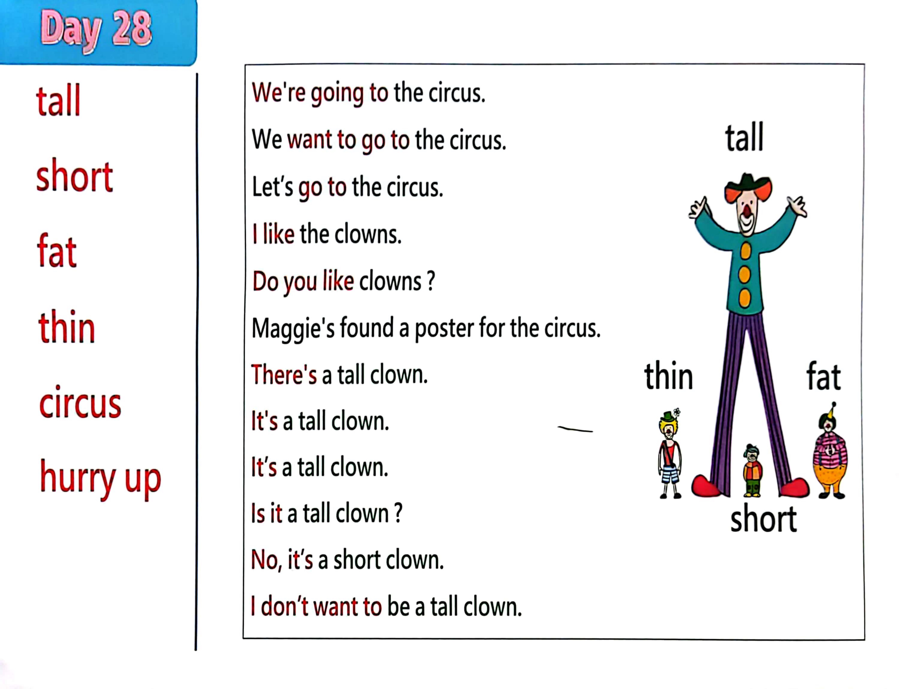

Day 28
Unit 8 · story
教材重点
教材重点依据网盘文件“第二级蓝色每日打卡全.pdf”，第 29 页对应 Day 28；保留文字整理并同时提供原图。
网盘教材重点原图 · PDF 第 29 页对应 Day 28
We're going to the circus. We want to go to the circus. Let’s go to the circus. I l i ke the clowns. Do you l i ke clowns ? Maggie's found a poster for the circus. There's a tall clown. I t's a tall clown. I t’s a tall clown. I s it a tall clown ? No, it’s a short clown. I don’t want to be a tall clown. tall short fat thin circus hurry up thin fat tall short

Unit 8 · story · 4–6岁
look · come · hello · short
Hello, hello, hello, hello, everyone. Hello.
台词本为机器转写，可能存在识别误差；不等同于视频逐字原声。
详细内容
Part 1 核心词汇
必须掌握 · 4 个Part 2 跟读句型与句型拓展
左侧保留台词本原句，右侧为替换练习；拓展内容不是视频逐字台词。
Hello, hello, hello, hello, everyone. Hello.
Everyone, hello. Hello.
Everyone say, hello. Everyone.
Tall, short, fat and thin.
Going two circus.
Part 3 台词本全文
来源：第2级台词本 · 028.Wow!Blue - Unit 8 - part 2 story_8_2.pdf。以下保留网盘 PDF 的机器转写文本，仅清理了文件路径页眉和空行。
Hello, hello, hello, hello, everyone. Hello.
Everyone, hello. Hello.
Everyone say, hello. Everyone.
Tall, short, fat and thin.
Going two circus.
Going to the circus. Hello. We're going to the circus. I like the clowns.
Do you like clouds? Yes, great, hey, steve, no, hey, maggie, look.
Maggie's found a poster for the circus, a look at the clowns.
Hey, look, there's a tall cloud, this cloud.
Look.
It's a tall classroom, so say it with me.
It's a tall cloud, again, it's a tall cloud. Former time.
It's at all ground. Yeah. Great.
Come on, let's go to the circus. Hey, hey, let's have some fun.
Time for some muggy magic. I break it up again to the circus.
Hey, look at me I am tall, clown.
A tall cloud, oh, that was lucky. What's going on.
Oh, look, another poster for the circus.
Let's go and have a look who. How look at these clowns. Hey, look at this clown.
Yeah, this one.
Is it a tall clown? No, it's a short cloud, so come on, say it with me, what is it.
It's a short clown, that's right.
It's a short clown and can come on.
It's a short clown, well done, come on.
Let's go to the circles, go into the circles. Look at me.
I'm a short girl, a short cloud.
That was crazy was I-A short clown on a unicide.
Oh, it must be Maggie Magic.
Maggie, stop being silly. I want to go to the circus, so come on, let's go.
Going to the circus.
/
-
/2/028.Wow!Blue - Unit 8 - part 2 story_8_2.txt[2022/3/29
星期二
6:42:43]
Hurry up, maggie, oh, nearly missed another post. Lo hey Maggie, look at this cloud.
Desk cloud, yeah, look, is it a tall clown, no,
Is it a short clown? No, what is it It's a.
Thin cloud, so say it with me, come on, it's a thin cloud. And again,
It's a thin cloud. One more time, it's a thin cloud.
Well, turn, but it's time to go.
No more naughty tricks. Maggie, come on.
Oh,
Run a clown again, but ha, ha, ha, HA, I can juggle ho hoo, oh no, oh no.
Look, I'm thin, hold a thin clown, I'm very thin.
Maggie, change me back again?
That's better, oh, hey, I can see the circus. I can see the circus, guarantee the circus.
Whoa, hey, look, steve.
Come back, stop. What is it Look.
It's another poster for the circus. Look at.
This cloud, yeah, look, it's a fat cloud, so say, when he come on.
It's a fat cloud, and again, it's a fat cloud, one more time, it's so.
Cash down. Time.
But Maggie, I don't want to be a fat cloud, OK?
You've changed me into a big, fat class.
Very full cake.
Oh, maggie,
Change me back. Now that's better.
But Maggie will stop being so naughty, sorry, because, look, we're here, we're at this circus, yeah, come
on.
We'll go ahead to the circus. Bye bye.
e